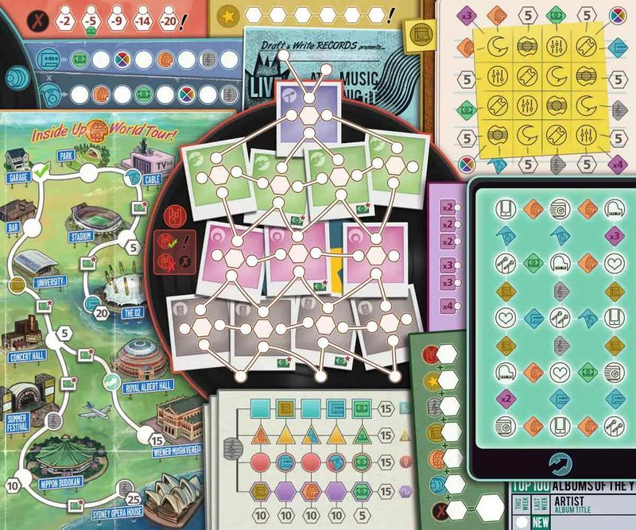

Draftandwriterecords
Board Game Arena 官方规则文档
Overview
Each player drafts cards to recruit the best singers, musicians, producers, and road crew. Upgrading equipment, recording singles, and touring venues helps you score beaucoup points and rockin' bonuses. Each round is a week in your band's life, with the weekend used to tabulate scores and gain bonuses for completing goals.
Each member of your band and crew has a set of four skills (blue "levels", red "tune", yellow "tempo", purple "pitch"), one in each direction. If two members have the same skill in a connecting direction (ex. the bottom one going north and the top one going south), that create a "harmony" which can be used to mark off any bonus.
Setup
Before game start, each player chooses a skill for their lead singer in the north position. Then each player must choose one private goal for themselves.
Week
At the start of each week, players draw 5 play cards each. Each player chooses 1 card to play, then mark the appropriate spot on their player sheets, either in the Crew, Agenda, or Assets. Players can always choose to Fail a card, which results in a penalty. Then each hand is passed to another player and the process repeats. The final card of a hand is always discarded.
Types of Cards
- Crew: Each crew falls under one of four categories: Singer, Musician, Producer, and Backstage. They can only be placed in their matching subsection. Some spaces require a cash restriction to be lifted before the crew can be placed. Crew can have harmonies between them if their colors match.
- Agenda: Agenda must be marked in the Agenda section on the player sheet.
- Asset: Assets must be marked in the Assets section on the player sheet.
Weekend
When all cards but one have been drafted, the end of round occurs, called the Weekend. Each public goal is checked to see if any players have accomplished the goal. If they have, they can claim the reward or pass. If claimed, a new goal is drawn to replace it. Private goals are checked after public goals.
Player Sheets
Each player sheet has ten sections:

- Fail: If you cannot place a play card or if you choose not to place it, you can fail. You check spaces from left to right and you will lose points based on the rightmost checked space. You gain a cash restriction bonus on your second fail.
- Goals: When you claim a goal, you write its score in these spaces. You can claim a maximum of 6 goals.
- Agenda: You can check these spaces in any order with a play card or with some bonuses. You gain bonuses if you check all spaces in a row, a column, or diagonal.
- Release: You can release an Album or Singles. In either case, you check spaces from left to right. Some spaces give you bonuses. You score points based on the number of Albums multiplied by the number of Singles.
- Crew: The crew member's score is written in the middle, and each of the 4 spaces around is colored. You can use a multiplier on the score if you have an unused multiplier. If the color matches the color of another crew, you gain a harmony bonus. You cannot place crews in spaces where there’s a cash restriction; you must remove the cash restriction first. You lose points at the end of the game if your crew is not full.
- Tour: You start checking spaces from the top-left. You must check a space before being able to go further. Some spaces are protected by a cash restriction, which must be checked before you can go further. Some spaces give you bonuses.
- Multiplier: When you gain a multiplier, you check a space. You can use a multiplier when you place crews to gain a bigger score.
- Assets: You can check these spaces in any order with a play card or with some bonuses. You gain bonuses if you check the two spaces around a bonus.
- Harmonies: You can check these spaces in any order when you gain a harmony bonus for a specific color for the crews. You can also gain harmony bonuses for any color. Some spaces give you bonuses. You score points if you check all spaces in a row or a column.
- Scores: This section contains the total score of each section.
End game
End game can be triggered one of three ways:
- One player checked all possible Fails
- One player has placed all crew
- One player has claimed the maximum number of goals
Each player checks a Fail for each missing crew.
Solo Mode
In Solo, you do not have a private goal and there are no weekends. Each turn, you draw two cards, then choose:
- Option A: Play one of the cards and discard the other.
- Option B: Draw a third card. If all cards are the same type (Crew, Agenda, or Assets) or no cards are the same type, you can play any card. If not, then you must play the card that does not match the other two. Once the card is played, you may claim a single goal. Whether you do or do not, the fourth goal is always discarded. All goals slide right and a new goal is drawn.
The game ends when any of the following occurs:
- The deck is empty
- All Fails are checked
- All Crews are placed
- The maximum number of goals is claimed
Your final score is calculated and ranked:
| Score | Description |
|---|---|
| 250+ | Your music is recognized and loved worldwide! |
| 200+ | Wow! Your band sells out major venues! |
| 160+ | Looking good, on your way to going platinum! |
| 100+ | Regular gigs keep coming your way, keep it up. |
| 0 | More practice is needed to catch your break. |